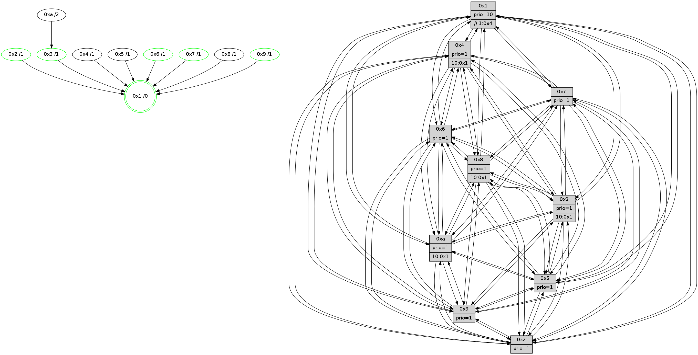

>> << IDX [start] -100 -25 -5 +0 +5 +25 +100 [1020.27007198]
 Previous packets
----------------------------------------------------------------------
1015.541283 beacon01(faad) #0 coord=01,02,03,04,05,06,07,0a,09,08 cycle=688.0ms assoc
-- color-indic=1 64 52 c0
1015.551266 beacon02(faad) #0 coord=01,02,03,04,05,06,07,0a,09,08 cycle=688.0ms assoc 64 c1 f1
1015.561264 beacon03(faad) #0 coord=01,02,03,04,05,06,07,0a,09,08 cycle=688.0ms assoc 64 bb bc
1015.571266 beacon04(faad) #0 coord=01,02,03,04,05,06,07,0a,09,08 cycle=688.0ms assoc 64 cc 56
1015.581265 beacon05(faad) #0 coord=01,02,03,04,05,06,07,0a,09,08 cycle=688.0ms assoc 64 b6 1b
1015.591268 beacon06(faad) #0 coord=01,02,03,04,05,06,07,0a,09,08 cycle=688.0ms assoc 64 38 cc
1015.601267 beacon07(faad) #0 coord=01,02,03,04,05,06,07,0a,09,08 cycle=688.0ms assoc 64 42 81
1015.611273 beacon0a(faad) #0 coord=01,02,03,04,05,06,07,0a,09,08 cycle=688.0ms assoc 64 33 8a
1015.621271 beacon09(faad) #0 coord=01,02,03,04,05,06,07,0a,09,08 cycle=688.0ms assoc 64 bd 5d
1015.631271 beacon08(faad) #0 coord=01,02,03,04,05,06,07,0a,09,08 cycle=688.0ms assoc 64 c7 10
1015.642497 [Hello(2): seq=645 sym=4,5,7,6,3,9,8,10,1 sysInfo=hasWarning stat=4:15,2,8,6/5:4,13,11,2/7:15,5,7,10/6:6,7,14,9/3:3,10,12,5/9:9,0,1,5/8:1,14,10,9/10:5,7,0,10/1:14,10,5,1]
1015.644913 [Hello(1): seq=558 sym=4,2,9,5,10,3,8,6,7 sysInfo=coloring-mode-on,ColoringModeRequestCalled stat=4:6,9,5,2/2:7,3,2,13/9:3,15,2,6/5:10,9,11,6/10:9,13,3,4/3:12,0,5,3/8:11,13,3,1/6:11,0,2,11/7:3,1,3,12]
1015.647504 [Color(10) seq=253 @0:0 prio=1 >10.@1,1.@4,1.@6,1.@7]
1015.650644 [Hello(6): seq=649 sym=2,3,5,4,7,9,8,10,1 sysInfo= stat=2:0,6,2,2/3:2,12,3,10/5:5,1,3,14/4:6,0,11,2/7:11,14,2,8/9:10,1,4,6/8:6,13,0,3/10:7,9,7,12/1:11,1,5,1]
1015.655057 [Color(6) seq=281 @0:0 prio=1]
1015.657356 [Hello(5): seq=649 sym=7,6,4,3,1,9,8,10,2 sysInfo=hasWarning stat=7:6,3,8,11/6:9,2,8,0/4:3,4,4,8/3:7,0,13,10/1:4,6,8,1/9:15,6,4,6/8:5,2,1,0/10:13,4,12,6/2:11,6,3,2]
1015.660843 [Hello(3): seq=649 sym=1,7,6,2,4,8,9,10,5 sysInfo= stat=1:9,9,0,0/7:0,0,11,9/6:3,15,13,3/2:10,8,15,12/4:7,7,2,7/8:2,2,11,2/9:1,8,0,12/10:15,13,13,3/5:10,3,9,12]
1015.665889 [Color(3) seq=278 @0:0 prio=1 >10.@1,1.@4,1.@6,1.@7]
----------------------------------------------------------------------
1016.329412 beacon01(faad) #0 coord=01,02,03,04,05,06,07,0a,09,08 cycle=688.0ms assoc
-- color-indic=1 64 ee c5
1016.339393 beacon02(faad) #0 coord=01,02,03,04,05,06,07,0a,09,08 cycle=688.0ms assoc 64 7d f4
1016.349395 beacon03(faad) #0 coord=01,02,03,04,05,06,07,0a,09,08 cycle=688.0ms assoc 64 07 b9
1016.359396 beacon04(faad) #0 coord=01,02,03,04,05,06,07,0a,09,08 cycle=688.0ms assoc 64 70 53
1016.369394 beacon05(faad) #0 coord=01,02,03,04,05,06,07,0a,09,08 cycle=688.0ms assoc 64 0a 1e
1016.379396 beacon06(faad) #0 coord=01,02,03,04,05,06,07,0a,09,08 cycle=688.0ms assoc 64 84 c9
1016.389397 beacon07(faad) #0 coord=01,02,03,04,05,06,07,0a,09,08 cycle=688.0ms assoc 64 fe 84
1016.399403 beacon0a(faad) #0 coord=01,02,03,04,05,06,07,0a,09,08 cycle=688.0ms assoc 64 8f 8f
1016.409400 beacon09(faad) #0 coord=01,02,03,04,05,06,07,0a,09,08 cycle=688.0ms assoc 64 01 58
1016.419402 beacon08(faad) #0 coord=01,02,03,04,05,06,07,0a,09,08 cycle=688.0ms assoc 64 7b 15
1016.430896 [Hello(4): seq=649 sym=5,7,6,2,3,9,8,10,1 sysInfo= stat=5:11,10,1,13/7:12,6,2,9/6:9,6,13,10/2:13,7,11,11/3:2,4,13,8/9:10,12,7,9/8:2,1,5,3/10:8,13,8,11/1:8,13,6,1]
1016.433937 [Color(2) seq=265 @0:0 prio=1]
1016.436594 [Hello(8): seq=593 sym=5,2,3,4,9,6,7,10,1 sysInfo=hasWarning stat=5:1,12,8,14/2:0,4,1,6/3:1,14,3,12/4:12,5,15,8/9:10,12,8,2/6:4,4,2,11/7:7,2,6,2/10:4,6,9,2/1:8,1,3,0]
1016.439598 [Color(1) seq=330 @0:0 prio=10 >>1.@4,1.@6,1.@7]
1016.442101 [Hello(10): seq=582 sym=6,2,3,8,7,5,9,4,1 sysInfo=hasWarning stat=6:4,4,5,4/2:6,1,14,6/3:15,12,11,8/8:1,9,5,2/7:8,2,5,3/5:13,5,7,13/9:11,10,6,1/4:2,6,8,7/1:6,13,10,1]
1016.446125 [Hello(7): seq=649 sym=2,3,5,6,4,8,9,10,1 sysInfo=hasWarning stat=2:3,0,10,14/3:0,10,5,12/5:15,4,9,0/6:0,11,6,7/4:3,14,2,1/8:11,7,4,1/9:5,6,6,0/10:10,1,10,3/1:0,5,6,0]
1016.448808 [Hello(9): seq=593 sym=2,5,3,4,7,6,8,10,1 sysInfo=hasWarning stat=2:2,9,1,4/5:9,12,15,4/3:4,7,0,12/4:9,4,12,7/7:8,12,0,10/6:6,2,8,9/8:6,9,3,3/10:14,8,3,2/1:12,12,6,1]
1016.451936 [Color(9) seq=266 @0:0 prio=1]
1016.458490 [Color(7) seq=219 @0:0 prio=1]
----------------------------------------------------------------------
1017.117544 beacon01(faad) #0 coord=01,02,03,04,05,06,07,0a,09,08 cycle=688.0ms assoc
-- color-indic=1 64 da dd
1017.127526 beacon02(faad) #0 coord=01,02,03,04,05,06,07,0a,09,08 cycle=688.0ms assoc 64 49 ec
1017.137525 beacon03(faad) #0 coord=01,02,03,04,05,06,07,0a,09,08 cycle=688.0ms assoc 64 33 a1
1017.147526 beacon04(faad) #0 coord=01,02,03,04,05,06,07,0a,09,08 cycle=688.0ms assoc 64 44 4b
1017.157526 beacon05(faad) #0 coord=01,02,03,04,05,06,07,0a,09,08 cycle=688.0ms assoc 64 3e 06
1017.167527 beacon06(faad) #0 coord=01,02,03,04,05,06,07,0a,09,08 cycle=688.0ms assoc 64 b0 d1
1017.177528 beacon07(faad) #0 coord=01,02,03,04,05,06,07,0a,09,08 cycle=688.0ms assoc 64 ca 9c
1017.187531 beacon0a(faad) #0 coord=01,02,03,04,05,06,07,0a,09,08 cycle=688.0ms assoc 64 bb 97
1017.197533 beacon09(faad) #0 coord=01,02,03,04,05,06,07,0a,09,08 cycle=688.0ms assoc 64 35 40
1017.207532 beacon08(faad) #0 coord=01,02,03,04,05,06,07,0a,09,08 cycle=688.0ms assoc 64 4f 0d
1017.219660 [Hello(5): seq=650 sym=7,6,4,3,1,9,8,10,2 sysInfo=hasWarning stat=7:7,4,8,11/6:9,2,8,0/4:4,4,4,8/3:8,1,13,10/1:4,7,8,1/9:0,7,4,6/8:6,2,1,0/10:14,4,12,6/2:11,7,3,2]
1017.222709 [Color(10) seq=254 @0:0 prio=1 >10.@1,1.@4,1.@6,1.@7]
1017.224340 [Hello(6): seq=650 sym=2,3,5,4,7,9,8,10,1 sysInfo= stat=2:1,7,2,2/3:3,13,3,10/5:6,1,3,14/4:7,0,11,2/7:12,15,2,8/9:11,2,4,6/8:7,13,0,3/10:8,9,7,12/1:11,2,5,1]
1017.229070 [Color(6) seq=282 @0:0 prio=1]
1017.232427 [Hello(3): seq=650 sym=1,7,6,2,4,8,9,10,5 sysInfo= stat=1:9,10,0,0/7:1,1,11,9/6:3,15,13,3/2:11,9,15,12/4:8,7,2,7/8:3,2,11,2/9:2,9,0,12/10:0,13,13,3/5:10,3,9,12]
1017.236210 [Color(3) seq=279 @0:0 prio=1 >10.@1,1.@4,1.@6,1.@7]
1017.239628 [Hello(2): seq=646 sym=4,5,7,6,3,9,8,10,1 sysInfo=hasWarning stat=4:0,2,8,6/5:5,13,11,2/7:0,6,7,10/6:7,8,14,9/3:4,11,12,5/9:10,1,1,5/8:2,14,10,9/10:6,8,0,10/1:15,11,5,1]
----------------------------------------------------------------------
1017.905677 beacon01(faad) #0 coord=01,02,03,04,05,06,07,0a,09,08 cycle=688.0ms assoc
-- color-indic=1 64 66 d8
1017.915659 beacon02(faad) #0 coord=01,02,03,04,05,06,07,0a,09,08 cycle=688.0ms assoc 64 f5 e9
1017.925660 beacon03(faad) #0 coord=01,02,03,04,05,06,07,0a,09,08 cycle=688.0ms assoc 64 8f a4
1017.935661 beacon04(faad) #0 coord=01,02,03,04,05,06,07,0a,09,08 cycle=688.0ms assoc 64 f8 4e
1017.945659 beacon05(faad) #0 coord=01,02,03,04,05,06,07,0a,09,08 cycle=688.0ms assoc 64 82 03
1017.955659 beacon06(faad) #0 coord=01,02,03,04,05,06,07,0a,09,08 cycle=688.0ms assoc 64 0c d4
1017.965660 beacon07(faad) #0 coord=01,02,03,04,05,06,07,0a,09,08 cycle=688.0ms assoc 64 76 99
1017.975665 beacon0a(faad) #0 coord=01,02,03,04,05,06,07,0a,09,08 cycle=688.0ms assoc 64 07 92
1017.985666 beacon09(faad) #0 coord=01,02,03,04,05,06,07,0a,09,08 cycle=688.0ms assoc 64 89 45
1017.995667 beacon08(faad) #0 coord=01,02,03,04,05,06,07,0a,09,08 cycle=688.0ms assoc 64 f3 08
1018.006850 [Hello(4): seq=650 sym=5,7,6,2,3,9,8,10,1 sysInfo= stat=5:12,10,1,13/7:13,7,2,9/6:10,7,13,10/2:14,8,11,11/3:3,5,13,8/9:11,13,7,9/8:3,1,5,3/10:9,14,8,11/1:8,14,6,1]
1018.009757 [Color(2) seq=266 @0:0 prio=1]
1018.011851 [Hello(9): seq=594 sym=2,5,3,4,7,6,8,10,1 sysInfo=hasWarning stat=2:3,9,1,4/5:10,12,15,4/3:5,8,0,12/4:10,4,12,7/7:8,13,0,10/6:7,3,8,9/8:6,9,3,3/10:14,9,3,2/1:12,12,6,1]
1018.015635 [Color(9) seq=267 @0:0 prio=1]
1018.016930 [Hello(7): seq=650 sym=2,3,5,6,4,8,9,10,1 sysInfo=hasWarning stat=2:4,0,10,14/3:1,11,5,12/5:0,4,9,0/6:1,12,6,7/4:4,14,2,1/8:11,7,4,1/9:5,6,6,0/10:10,2,10,3/1:0,5,6,0]
1018.020701 [Color(7) seq=220 @0:0 prio=1]
1018.022191 [Color(1) seq=331 @0:0 prio=10 >>1.@4,1.@6,1.@7]
1018.025679 [Hello(8): seq=594 sym=5,2,3,4,9,6,7,10,1 sysInfo=hasWarning stat=5:2,12,8,14/2:1,4,1,6/3:2,15,3,12/4:12,5,15,8/9:11,13,8,2/6:5,5,2,11/7:8,3,6,2/10:5,7,9,2/1:8,2,3,0]
1018.030133 [Hello(10): seq=583 sym=6,2,3,8,7,5,9,4,1 sysInfo=hasWarning stat=6:5,5,5,4/2:7,1,14,6/3:0,13,11,8/8:1,9,5,2/7:9,3,5,3/5:14,5,7,13/9:12,11,6,1/4:2,6,8,7/1:6,13,10,1]
----------------------------------------------------------------------
1018.693812 beacon01(faad) #0 coord=01,02,03,04,05,06,07,0a,09,08 cycle=688.0ms assoc
-- color-indic=1 64 a2 d6
1018.703793 beacon02(faad) #0 coord=01,02,03,04,05,06,07,0a,09,08 cycle=688.0ms assoc 64 31 e7
1018.713797 beacon03(faad) #0 coord=01,02,03,04,05,06,07,0a,09,08 cycle=688.0ms assoc 64 4b aa
1018.723794 beacon04(faad) #0 coord=01,02,03,04,05,06,07,0a,09,08 cycle=688.0ms assoc 64 3c 40
1018.733794 beacon05(faad) #0 coord=01,02,03,04,05,06,07,0a,09,08 cycle=688.0ms assoc 64 46 0d
1018.743794 beacon06(faad) #0 coord=01,02,03,04,05,06,07,0a,09,08 cycle=688.0ms assoc 64 c8 da
1018.753795 beacon07(faad) #0 coord=01,02,03,04,05,06,07,0a,09,08 cycle=688.0ms assoc 64 b2 97
1018.763799 beacon0a(faad) #0 coord=01,02,03,04,05,06,07,0a,09,08 cycle=688.0ms assoc 64 c3 9c
1018.773781 beacon09(faad) #0 coord=01,02,03,04,05,06,07,0a,09,08 cycle=688.0ms assoc 64 4d 4b
1018.783802 beacon08(faad) #0 coord=01,02,03,04,05,06,07,0a,09,08 cycle=688.0ms assoc 64 37 06
1018.795026 [Hello(2): seq=647 sym=4,5,7,6,3,9,8,10,1 sysInfo=hasWarning stat=4:1,2,8,6/5:5,13,11,2/7:1,7,7,10/6:7,8,14,9/3:4,11,12,5/9:11,2,1,5/8:3,14,10,9/10:7,8,0,10/1:15,12,5,1]
1018.798302 [Hello(5): seq=651 sym=7,6,4,3,1,9,8,10,2 sysInfo=hasWarning stat=7:8,5,8,11/6:10,3,8,0/4:5,4,4,8/3:9,2,13,10/1:4,8,8,1/9:1,8,4,6/8:7,2,1,0/10:15,5,12,6/2:12,8,3,2]
1018.801661 [Hello(6): seq=651 sym=2,3,5,4,7,9,8,10,1 sysInfo= stat=2:2,8,2,2/3:4,14,3,10/5:7,1,3,14/4:8,0,11,2/7:13,0,2,8/9:11,3,4,6/8:8,13,0,3/10:9,9,7,12/1:11,3,6,1]
1018.804784 [STC(6)->1 #0.143 tree-change,inconsistent-stability,stable,to-color d=1]
1018.806083 [Hello(3): seq=651 sym=1,7,6,2,4,8,9,10,5 sysInfo= stat=1:9,11,1,0/7:2,2,11,9/6:3,15,13,3/2:12,10,15,12/4:9,7,2,7/8:4,2,11,2/9:2,10,0,12/10:1,13,13,3/5:11,3,9,12]
1018.809739 [Color(6) seq=283 @0:0 prio=1]
1018.811684 [Color(10) seq=255 @0:0 prio=1 >10.@1,1.@4,1.@6,1.@7]
1018.814750 [STC(3)->1 #0.143 tree-change,inconsistent-stability,stable,to-color d=1]
1018.817332 [Color(3) seq=280 @0:0 prio=1 >10.@1,1.@4,1.@6,1.@7]
----------------------------------------------------------------------
1019.481942 beacon01(faad) #0 coord=01,02,03,04,05,06,07,0a,09,08 cycle=688.0ms assoc
-- color-indic=1 64 1e d3
1019.491924 beacon02(faad) #0 coord=01,02,03,04,05,06,07,0a,09,08 cycle=688.0ms assoc 64 8d e2
1019.501926 beacon03(faad) #0 coord=01,02,03,04,05,06,07,0a,09,08 cycle=688.0ms assoc 64 f7 af
1019.511925 beacon04(faad) #0 coord=01,02,03,04,05,06,07,0a,09,08 cycle=688.0ms assoc 64 80 45
1019.521925 beacon05(faad) #0 coord=01,02,03,04,05,06,07,0a,09,08 cycle=688.0ms assoc 64 fa 08
1019.531924 beacon06(faad) #0 coord=01,02,03,04,05,06,07,0a,09,08 cycle=688.0ms assoc 64 74 df
1019.541925 beacon07(faad) #0 coord=01,02,03,04,05,06,07,0a,09,08 cycle=688.0ms assoc 64 0e 92
1019.551930 beacon0a(faad) #0 coord=01,02,03,04,05,06,07,0a,09,08 cycle=688.0ms assoc 64 7f 99
1019.561931 beacon09(faad) #0 coord=01,02,03,04,05,06,07,0a,09,08 cycle=688.0ms assoc 64 f1 4e
1019.571930 beacon08(faad) #0 coord=01,02,03,04,05,06,07,0a,09,08 cycle=688.0ms assoc 64 8b 03
1019.583745 [Hello(8): seq=595 sym=5,2,3,4,9,6,7,10,1 sysInfo=hasWarning stat=5:3,12,8,14/2:2,4,1,6/3:3,0,4,12/4:12,5,15,8/9:11,13,8,2/6:6,6,3,11/7:8,3,6,2/10:6,8,9,2/1:8,2,3,0]
1019.586528 [Hello(9): seq=595 sym=2,5,3,4,7,6,8,10,1 sysInfo=hasWarning stat=2:4,10,1,4/5:11,12,15,4/3:6,9,1,12/4:11,4,12,7/7:9,14,0,10/6:8,4,9,9/8:7,9,3,3/10:15,10,3,2/1:12,13,6,1]
1019.590304 [Color(9) seq=268 @0:0 prio=1]
1019.591594 [Hello(10): seq=584 sym=6,2,3,8,7,5,9,4,1 sysInfo=hasWarning stat=6:5,5,5,4/2:7,1,14,6/3:0,14,12,8/8:1,9,5,2/7:9,3,5,3/5:14,5,7,13/9:12,11,6,1/4:2,6,8,7/1:7,13,10,1]
1019.594542 [Color(1) seq=332 @0:0 prio=10 >>1.@4,1.@6,1.@7]
1019.596183 [Color(7) seq=221 @0:0 prio=1]
1019.597564 [Color(2) seq=267 @0:0 prio=1]
1019.601256 [STC(10)->3-.->1 #0.143 to-color d=2]
1019.604754 [Hello(4): seq=651 sym=5,7,6,2,3,9,8,10,1 sysInfo= stat=5:13,10,1,13/7:14,8,2,9/6:11,8,14,10/2:15,9,11,11/3:4,6,14,8/9:12,14,7,9/8:4,1,5,3/10:10,15,8,11/1:8,15,6,1]